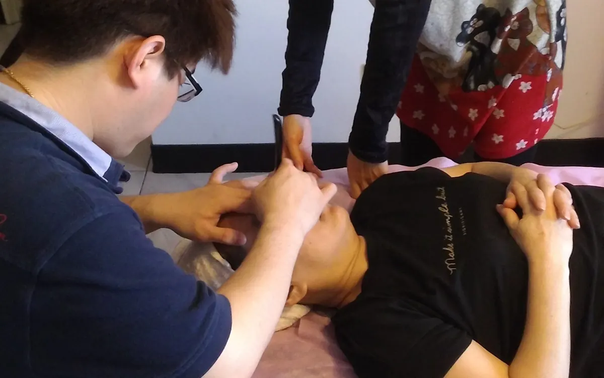

The Bojin Journal · Rituals & routines
What should a simple morning face ritual look like?

A good morning ritual is short, and the order matters more than the minutes. Three or four minutes, done in a sensible sequence, does most of the work. You are not fixing anything. You are helping your face wake up, easing overnight tightness, and moving the fluid that pooled while you slept so you look a little less puffy and a little more rested before the day starts.
A calm, few-minute morning face ritual done in the right order. Learn the bojin sequence, the tool, and the comfortable pressure that makes it feel like more. Remember: this is a gentle, supported self-care observation you can test on one side of your face—never a forceful press or medical treatment.
Why does my face look puffy and tight first thing in the morning?
When you lie flat for seven or eight hours, fluid settles in the soft tissue of your face instead of moving downward the way it does when you are upright. That is why you can wake up looking a bit swollen around the eyes and cheeks, especially if you slept on one side or had a salty dinner the night before. It is normal, and it usually eases on its own as the morning goes on.
The tightness is a separate thing. Muscles around your jaw, brow, and temples hold tension while you sleep, and some of us clench without ever knowing it. So you meet the mirror with a face that feels a little stiff and looks a little full. A few gentle minutes can nudge both along faster than waiting. After an especially bad night, that puffiness and dullness both run stronger; see a gentle full-face reset, which also covers that rougher-morning version.
How does the Bojin Method help a morning face wake up?
If you already know gua sha, you have a head start, because bojin comes from the same family of Chinese hands-on face care and will feel familiar. But it is its own, deliberate method. What makes it work is three things: the order you move in, the angle you hold the tool, and the exact spot you work.
The traditional tool is a bojin stick, a slim, polished stainless steel tool shaped to follow the curves of the face. While you are learning you can use clean fingertips or a smooth gua sha stone you already own, but the stick is what the method was built around. The pressure is not the barely-there touch people expect, and it is not forceful either. It is the right, comfortable pressure for you, firm enough to feel and never enough to hurt or drag the skin.
In the morning, the sequence is everything. You settle the face, read where it feels tight, work the zones in a logical path, and finish down the neck so the fluid you loosened has somewhere to go. A tool on its own comes with no method attached. Add the order, the angle, and the spot, and the same few minutes feel different.
Your morning face does not need pressing harder or barely touching. It needs the right, comfortable pressure, held at the right angle, worked in the right order and place. That order, angle, and placement is the method.

Your simple morning ritual, in order
Use a bojin stick or clean fingertips, and add a few drops of oil or a little cream so nothing drags across the skin. Work in order, follow the angle of the bone underneath, and keep the pressure comfortable, firm enough to feel but never enough to tug. The whole thing takes three or four minutes.

Warm and settle
Rest both palms flat over your cheeks for a few slow breaths. This warms the skin, spreads your oil, and tells your face the day is beginning before you touch a tool to it.
Read your face first
Press lightly along your brow, temples, and jaw and notice where it feels tightest this morning. That quick check sets your order, so you start where your face is asking for attention.
Ease around the eyes
Working outward from the inner corner along the bone under the eye, glide the stick following that curved angle. This is where morning puffiness sits, so move slowly and let the angle guide you.
Open the cheeks and mid-face
Angle the tool along the cheekbone and sweep from beside the nose out toward your ear. Keep the pressure comfortable and let the flat of the bone do the work, not force.
Finish down the sides of the neck
This is the step people skip. Sweep gently from behind the jaw straight down each side of the neck several times, so everything you loosened above has a clear path to move away.
What can I expect?
On most mornings you can expect to look a little less puffy and a little more awake, with the tension around your jaw and brow eased and your face feeling calmer and more ready for the day. Skin often looks brighter and more lifted-looking right after, and your morning serum tends to sink in better on a face that has just been warmed and worked. Many women find the few quiet minutes are as much for their head as their face.
Be honest with yourself about the limits, too. This is a soothing self-care ritual, not a treatment, and it will not remove lines, erase under-eye bags, or change the shape of your face. The fresh, less-puffy look is real but temporary, and it rewards showing up regularly rather than pressing harder. And anything sudden, one-sided, painful, or not right is worth seeing your doctor about.
Start small and let it become a habit. A short, ordered ritual you do beats a long one you dread. Some mornings you will feel a clear difference, some mornings less, and both are fine.
Quick answers
How long should a morning face ritual take?
Three or four minutes is plenty. In the morning the order matters more than the time, so a short ritual done in a sensible sequence gives you more than a long, aimless one. If you only have two minutes, keep the read and the neck finish and trim the middle.
Should I do my face ritual before or after applying skincare?
Apply a few drops of oil or a little cream first so the tool or your fingertips glide without dragging, then work. Many women save their serum for right after, when a warmed, worked face tends to absorb it a bit better. Do whatever keeps the skin comfortable and slippery enough to move over.
Do I need a bojin stick, or can I use my fingers?
You can start with clean fingertips, or a smooth gua sha stone you already own, while you learn the order and the angles. The bojin stick is a slim, polished stainless steel tool the method was built around, and it follows the curves of the face more precisely once you are ready for it.
Is it better to do this in the morning or at night?
Morning is lovely for easing overnight puffiness and tightness so you start the day looking more rested. Night works well for winding down. Neither is better, so pick the time you will keep, and let the order and comfortable pressure carry it either way.
See the order, the angle, and the spot
Reading about a sequence is one thing; watching it is another. My free 3-minute video walks you through the morning order step by step, so you can see exactly where to place the tool, the angle to follow, and the comfortable pressure that makes a few minutes feel like more. Follow along tomorrow morning.
Watch the free 3-min videoYu-Ting Lan is a Taiwan-based international bojin instructor and the founder of Héhé Studio. She has taught her bojin method to more than a thousand students, from complete beginners to grandmothers, across Taiwan, Hong Kong, and Malaysia.